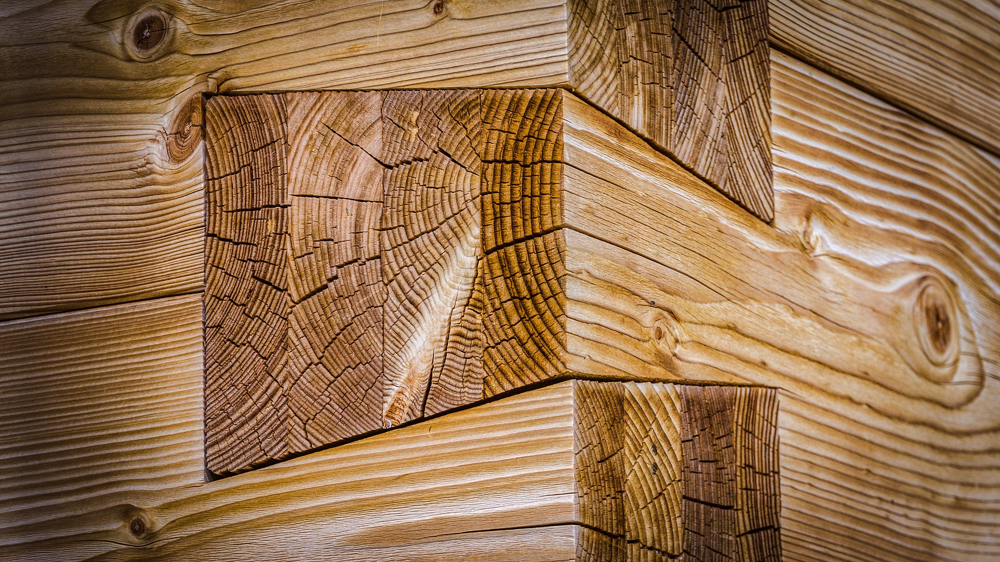

Materials
There are many materials that one could use when making a project through woodworking. One of the main materials obviously being wood. The materials in the machines also play an important role. The materials the machine is made out of is the key for how effective the tool is at doing something. For example, carbon fibre is lighter than steel yet it is much stronger. Carbon fibre has the strength that steel has without compromising the strength.
